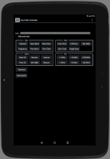

ArduVidRx Controller

ArduVidRxController is an Android app for controlling an ArduVidRx
receiver. See below for information on the screens and buttons.
Connect Screen Buttons
Connect: Establish a Bluetooth connection to the receiver.
Devices: Select from the list of Bluetooth
devices that have been paired and establish a connection.
Test: Enter a test mode where screens are displayed and
buttons may be used but no actual hardware is connected.
Operation Screen Widgets
The first line of text on the Operation Screen shows the revision
information for the currently-connected receiver. The second line
displays the currently-tuned channel. The indicator bar below
shows the live RSSI (signal strength) value for the currently-tuned
channel.
RSSI audio tone: Selecting this checkbox will enable an
audio tone indicating the live RSSI (signal strength) value for the
currently-tuned channel.
Operation Screen Buttons
Tune Group
Channel: Select a channel to be tuned on the receiver.
Frequency: Enter a frequency (in MHz) to be tuned on the
receiver.
Next Band: Increment the tuned channel-code by one band
(i.e., "A1" to "B1").
Prev Band: Decrement the tuned channel-code by
one band (i.e., "B1" to "A1").
Next Chan: Increment the tuned channel-code by one
channel # (i.e., "A1" to "A2").
Prev Chan: Decrement the tuned channel-code by
one channel # (i.e., "A2" to "A1").
Scan Group
Chan Scan: Perform a band scan and display the channels
with RSSI (signal strength) levels above the "Min RSSI" level.
Only the channels with the highest RSSI values are shown.
Frequency: Perform a band scan and display the
channels with RSSI levels above the "Min RSSI" level. All
detected channels are shown.
Min RSSI: Enter the minimum-RSSI value for scans (and
monitor functions). Channels with RSSI (signal strength) levels
above this value are considered to have a signal on them.
Auto Tune: Perform a band scan and
tune the receiver to the channel with the strongest signal (highest RSSI).
Graph Scan: Display the Graph Scan screen.
Monitor Group
Next Ch: Tune the receiver to the next channel among those
detected to have a signal on them. The band is scanned as needed
to detect which channels have signals.
Prev Ch: Tune the receiver to the previous channel among those
detected to have a signal on them. The band is scanned as needed to
detect which channels have signals.
Monitor: Automatically tune the receiver through the channels detected to have
a signal on them, changing channels on a periodic basis. The band is scanned as needed to detect which
channels have signals.
List: Display the "Select Monitor/Scan Channels" dialog (see below).
Interval: Enter the interval value (in seconds) for the automatic channel switching of the Monitor-button function.
Rescan: Perform a band scan to detect which channels have signals.
Fine Group
+1 MHz: Increase the value of the frequency tuned on the receiver by 1 MHz.
-1 MHz: Decrease the value of the frequency tuned on the receiver by 1 MHz.
+10 MHz: Increase the value of the frequency tuned on the receiver by 10 MHz.
-10 MHz: Decrease the value of the frequency tuned on the receiver by 10 MHz.
+100 MHz: Increase the value of the frequency tuned on the receiver by 100 MHz.
-100 MHz: Decrease the value of the frequency tuned on the receiver by 100 MHz.
General Buttons
Terminal: Enter Terminal mode, in which CLI commands may be executed.
Disconnect: Close the Bluetooth connection to the receiver.
Graph Scan Screen Buttons
Values: Pause the scan and display a dialog showing the
numeric RSSI values for all the channels. The channel with the
highest RSSI value is selected and tuned on the receiver, and selecting a channel on
the dialog will tune it on the receiver.
Pause: Pause the scan. The channel with the highest RSSI value is indicated on the graph and tuned on the receiver.
Touching bars displayed on the graph will tune the receiver to the
associated channel (and show channel / RSSI information below the
graph).
Close: Close the graph and return to the Operation Screen.
Monitor/Scan Channels List
The 'List' button will display a dialog containing frequency and "preset"
items that may selected to populate the monitor/scan-channels list. If
the list is not empty then only the channels in the list will be scanned and
displayed by the monitor ("Next Ch", "Prev Ch", "Monitor", "Rescan" buttons),
channel-scan ("Chan Scan" button) and auto-tune ("Auto Tune" button) functions.
If the list is empty then all channels will be scanned. The
"preset" items (at the bottom) may be used to select their associated sets
of frequencies. Pressing the "Clear" button will deselect all items.
The following monitor/scan-list presets are available:
A: 5865 5845 5825 5805 5785 5765 5745 5725
B: 5733 5752 5771 5790 5809 5828 5847 5866
E: 5705 5685 5665 5645 5885 5905 5925 5945
F: 5740 5760 5780 5800 5820 5840 5860 5880
R: 5658 5695 5732 5769 5806 5843 5880 5917
L: 5362 5399 5436 5473 5510 5547 5584 5621
IMD5: 5685 5760 5800 5860 5905
IMD6: 5645 5685 5760 5800 5860 5905
ET5: 5665 5725 5820 5860 5945
ET5A: 5665 5752 5800 5866 5905
ET5B: 5665 5752 5800 5865 5905
ET5C: 5665 5760 5800 5865 5905
ETBest6: 5645 5685 5760 5805 5905 5945
ET6minus1: 5645 5685 5760 5905 5945
FPV Frequency Bands and Channels
1 2
3 4
5 6
7 8
Band F: 5740 5760 5780 5800 5820 5840 5860 5880 (IRC NexWave / Fatshark)
Band E: 5705 5685 5665 5645 5885 5905 5925 5945 (Boscam E / DJI)
Band B: 5733 5752 5771 5790 5809 5828 5847 5866 (Boscam B)
Band A: 5865 5845 5825 5805 5785 5765 5745 5725 (Boscam A / TBS / RC305)
Band R: 5658 5695 5732 5769 5806 5843 5880 5917 (Raceband)
Band L: 5362 5399 5436 5473 5510 5547 5584 5621
Check out the ArduVidRx home page: http://www.etheli.com/ArduVidRx
Click here to
contact me
etheli.com home page